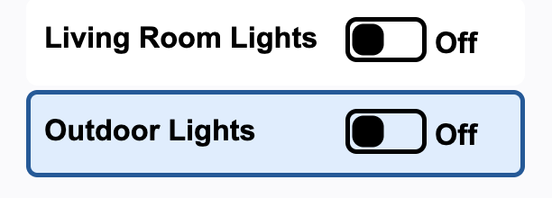
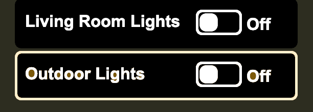
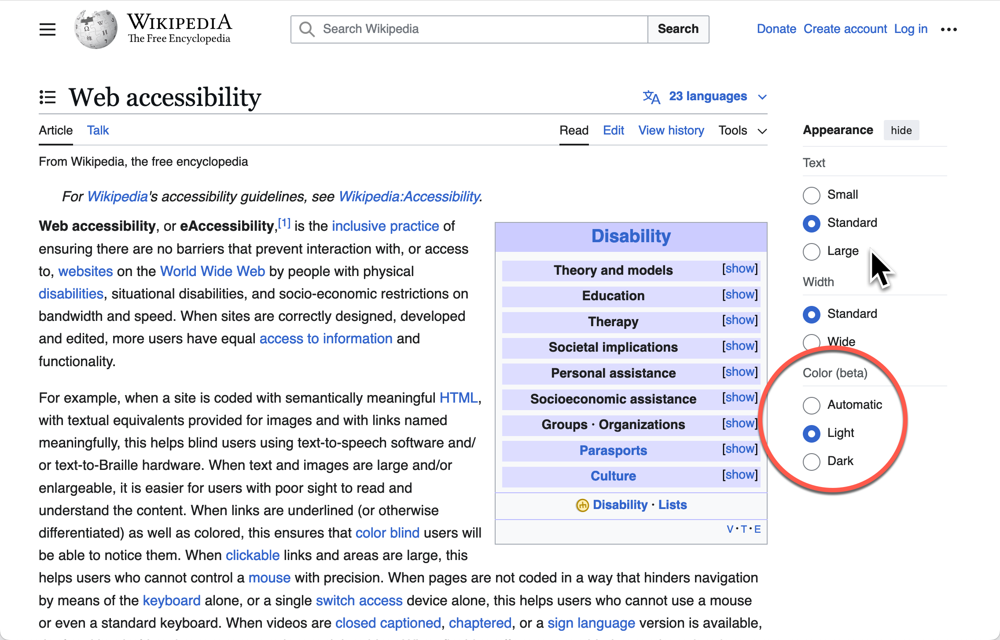
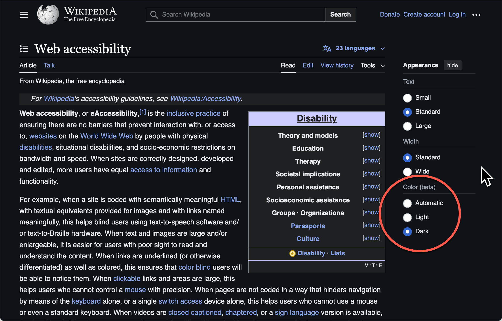
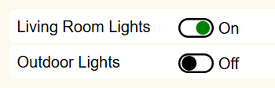
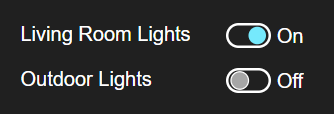
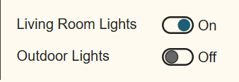
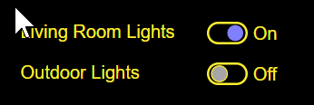

Supporting Color Contrast Settings
Introduction
Some people with visual disabilities using the web need more than the required default minimum color contrast. Additionally, people with visual or cognitive disabilities sometimes need combinations of colors that are different from those specified by an author. Operating systems provide settings that enable those users to increase contrast and choose alternate color themes. Web authors can ensure their content is accessible to those users by appropriately responding to such operating system settings. This section explains how to make components responsive to color and contrast settings and how to test support for those settings.
This section covers:
- Operating system and browser features that enable users to adjust rendered colors and contrast ratios.
- Using the CSS media queries that support user color and contrast settings (
prefers-contrast,prefers-color-scheme, andforced-colors). - Using
<system-colors>CSS data types to provide consistent rendering of components. - Using the value of
currentcolorto inherit the value of thecolorproperty value of text content that responds to user color and contrast settings. - The benefits of using SVG graphics when creating components that adapt to color contrast and theme settings.
User Options for Adjusting Colors and Contrast
The following table summarizes operating system settings that enable users to adjust color themes and increase contrast as well as authoring practices for supporting those settings in web content.
| Feature | Platforms | Description | Authoring Practices |
|---|---|---|---|
| Invert Colors |
Operating system accessibility setting that automatically transforms all rendered colors in all apps, including browser content, by subtracting each RGB value from 255. This is a simple way of enabling users to turn a light color theme into a dark color theme or vice-versa. It is a prominent feature in the accessibility settings of most operating systems. Examples of color inversion:
|
When this setting is enabled, some browsers set the CSS media query Inverting of colors can have unpleasant side effects, such as shadows turning into highlights, which can reduce the readability of the content, use gradients instead. For content to render well when invert colors is enabled, ensure it meets the minimum color requirements specified by Web Content Accessibility Guidelines (WCAG) and avoid using shadows. |
|
| Increase contrast |
|
Operating system accessibility setting indicating the user prefers contrast that is stronger than the default minimum. Typically, this setting does not automatically change rendering of native apps or web content, so it only works when authors provide support for it. Each operating system supports this setting differently; there is no standard that specifies how much contrast should be increased when this setting is enabled. A reasonable target for web content is specified by WCAG 1.4.6: Contrast (Enhanced). |
When this setting is enabled, the CSS media query prefers-contrast is set to more.
Develop a higher contrast color scheme and use this media query to determine when to enable it.
This can also include switching to use system-colors CSS media types.
|
|
Color Scheme (AKA Light and Dark Modes) |
An operating system setting that enables users to choose between a light and dark color scheme.
The default is usually the light color scheme.
Typically, this setting does not automatically change rendering of native apps or web content, so it only works when developers provide support for it.
People switch to the dark color scheme in dark settings, e.g. at night, because it can make content easier to read or be less disruptive to other people.
However, people with certain visual disabilities prefer a dark color scheme as their default.
|
The CSS media query prefers-color-scheme identifies the current color scheme by returning light or dark.
Develop styles for dark text on a light background and light text on a dark background and use this media query to apply the appropriate style.
Ensure the text content and components for both settings meet
WCAG 1.4.3: Contrast (Minimum).
|
|
|
Contrast Themes (AKA Forced Colors) |
Operating system and browser accessibility feature that automatically forces content to render using an alternative color theme chosen by the user.
Contrast themes are often designed to provide extra high contrast.
Browsers replace author specified colors with colors that users specify for various types of HTML elements.
Note that ARIA attributes do not inform replacement color selection, e.g., a div with role button renders with text colors, not button colors.
|
When a user enables a contrast theme, the CSS media query forced-colors is set to active.
Use currentcolor and system-color values to style user interface controls and custom widgets to the user preferences.
|
Invert Colors
The invert colors accessibility setting is an operating system feature that automatically transforms all rendered colors to their opposite. For example, content rendered as white is changed to black. Content styled as blue is rendered as a brown, i.e., a mixture of red and green.
Note: The inverted-colors: inverted CSS media query can be used to detect when the user setting for inverting colors, but it is not widely supported in browsers.
Invert Colors Example
The following images illustrate how a switch element is rendered on macOS both when invert colors is disabled and enabled.
| Setting | Screen Shot |
|---|---|
| Invert Colors: Off (default) |  |
| Invert Colors: on |  |
Supporting Invert Colors
- Develop a default color scheme that meets WCAG 1.4.3: Contrast (Minimum) requirement.
- Avoid using shadow styling, use gradients instead.
Testing Invert Colors
In each operating system used by the target audience:
- Turn on the invert colors feature, which is typically located in accessibility settings.
- Verify that the color contrast ratios of text and components meets or exceeds the requirements specified by WCAG 1.4.6: Contrast (Enhanced).
Increase Contrast
Increase contrast is an operating system feature, usually available in accessibility settings, that enables users to specify a preference for contrast that is higher than default minimum. When users turn on increased contrast, each operating system changes the contrast of its own user interface differently; there is no standard for how much contrast should be increased. Typically, this setting does not automatically change rendering of native apps or web content, so users benefit only when authors provide support for it.
Increase Contrast Example
Enable the "increased contrast" feature on your device, and color contrast ratios in the below example will change:
- Text contrast increases from 12.8 to 18.1.
- Contrast of border and fill for the button increases from 4.6 to 12.2.
prefers-contrast |
Text Background | Text | Text Color Contrast | Button Background | Button Fill | Button Color Contrast |
|---|---|---|---|---|---|---|
no-preference |
|
|
12.8 |
|
|
4.6 |
more
|
|
|
18.1 |
|
|
12.2 |
Increase Contrast CSS Media Query Code
@media (prefers-contrast: more) {
button[role="switch"] {
background-color: #eeeeee;
color: #000;
.label {
color: #000;
}
svg {
rect {
fill: #0051A4;
stroke: #061d3a;
}
circle {
&.off,
&.on {
stroke: #061d3a;
fill: #fff;
}
}
}
}
}
Supporting Increase Contrast
- Develop an increased contrast color scheme that meets or exceeds the requirements specified in WCAG 1.4.6: Contrast (Enhanced).
- When the the
prefers-contrastmedia query changes fromno-preferencetomore, render content using the increased contrast color scheme.
Note: Operating systems that support the forced-colors media query set prefers-contrast to custom when the forced-colors is set to active.
Testing Increase Contrast
In each operating system used by the target audience:
- Turn on the increase contrast feature, which is typically located in accessibility settings.
- Verify that the color contrast ratios of text and components meets or exceeds the requirements specified by WCAG 1.4.6: Contrast (Enhanced).
Color Scheme (Light and Dark Modes)
The color scheme known as dark mode is used by people in dark settings, e.g. at night, because it can make content easier to read or be less disruptive to others. While such use cases were primary drivers of its development, dark mode also significantly improves accessibility for many people with visual impairments.
Color Scheme Example: Switch
The below example of a switch shows how colors can change when users switch color schemes. Enable "dark mode" on your device, and the example will be rendered with the dark color scheme.
prefers-color-scheme |
Text Background | Text | Text Color Contrast | Button Background | Button Fill | Button Color Contrast |
|---|---|---|---|---|---|---|
light |
|
|
12.8 |
|
|
4.6 |
dark
|
|
|
12.6 |
|
|
5.36 |
Color Scheme CSS Media Query Code
:root {
color-scheme: light dark;
}
button.color-scheme[role="switch"] {
display: block;
margin: 2px;
padding: 4px 4px 8px 8px;
border: 0 solid light-dark(#005a9c, #add8e6);
border-radius: 5px;
width: 17em;
height: 3em;
text-align: left;
background-color: light-dark(#e9e9e9, #333);
color: light-dark(#242424, #fff);
.label {
position: relative;
top: -3px;
display: inline-block;
padding: 0;
margin: 0;
width: 10em;
vertical-align: middle;
color: light-dark(#242424, #fff);
}
svg {
rect {
fill: light-dark(#a1a1a1, #36c);
stroke-width: 2;
stroke: light-dark(#757575, #36c);
}
circle {
&.off {
display: block;
stroke: light-dark(#757575, #fff);
fill: light-dark(#fff, #fff);
fill-opacity: 1;
}
}
}
}
Color Scheme Example: Wikipedia Page
The following example illustrates how Wikipedia supports the color scheme media query. The example includes showing the "Appearance" sidebar allowing the user to choose the light or dark scheme and other rendering options for text size and column width.
| Media Query | Screen Shot |
|---|---|
prefers-color-scheme: light
|
 |
prefers-color-scheme: dark
|
 |
Supporting Color Scheme
- Develop both a light scheme, with dark text on a light background, and a dark scheme, with light text on a dark background. Choose color palettes that are easy to read in both schemes and ensure that text and components meet or exceed the color contrast ratios specified by WCAG 1.4.3: Contrast (Minimum).
- In dark schemes, consider using highlights and gradients instead of relying on shadows to distinguish components, since shadows may be difficult to perceive against dark backgrounds.
-
Allow the active color scheme to respond to the user's color scheme preference.
The CSS media query
prefers-color-schemecan be used to apply different styles based on whether the user's preferred color scheme islightordark. The CSSlight-dark()function can be used to select between two CSS values based on the color scheme in effect, without requiring separate styles in aprefers-color-schememedia query.
Dark mode design resources:
- CSS-Tricks: Dark Mode in CSS Guide
- UX Design Institute: How to design for dark mode: a practical guide
Testing Color Scheme
In each operating system used by the target audience:
- Turn on the dark color theme.
- Verify contrast for text and components meet or exceed the contrast ratios specified by WCAG 1.4.2: Contrast (Minimum).
Contrast Themes (Forced Colors)
Contrast themes are an accessibility setting available in Windows and Firefox that automatically forces apps and content to render using an alternative color theme chosen by the user. In addition to forcing color changes the browser also ignores background images and gradients. Note that Chrome also provides an implementation, but it is not customizable and can only be enabled by using its developer tools.
A contrast theme enables users to specify the colors that are used to render various types of UI elements, such as text, hyperlinks, and buttons.
When a contrast theme is enabled, the browser automatically replaces each author specified color with one of the theme colors based on the type of HTML element.
CSS color module Level 4 defines twenty-three system color keywords that operating system and browsers can use to define a theme.
A system color keyword specifies the types of UI elements that are automatically rendered with the color value mapped to that keyword by a contrast theme.
For example, the Windows Dusk theme specifies powder blue #b6f6f0 as the system color associated with the keyword buttonText.
When the Dusk theme is active, the browser automatically replaces each author specified color with powder blue #b6f6f0 when rendring text on buttons or when rendering any other element that is also mapped to the system color buttonText.
None of the implementations of contrast themes in operating systems or browsers support all twenty-three system color keywords. The following table shows the twenty-three system color keywords and indicates which are supported in the Windows, Firefox, and Chromium implementations.
| CSS System Color | Windows Theme Feature | Chromium Computed Color) | Description |
|---|---|---|---|
| ActiveText | Hyperlink |
#ff0000
|
Text of active links |
| ButtonBorder | Button Text |
#000000
|
Base border color of controls |
| ButtonFace | Button Background |
#efefef
|
Background color of controls |
| ButtonText | Button Text |
#000000
|
Text color of controls |
| Canvas | Background |
#ffffff
|
Background of application content or documents |
| CanvasText | Text |
#000000
|
Text color in application content or documents |
| Field | Button Background |
#ffffff
|
Background of input fields |
| FieldText | Button text color |
#000000
|
Text in input fields |
| GrayText | Inactive Text |
#808080
|
Text color for disabled items (e.g. a disabled control) |
| Highlight | Selected Background |
#b3d7fe
|
Background of selected items |
| HighlightText | Selected Text |
#000000
|
Text color of selected items |
| LinkText | Hyperlink |
#0000ee
|
Text of non-active, non-visited links |
Contrast Themes Windows Example
The following table shows the default colors for each theme users can choose in Windows 11.
| Feature | Aquatic Theme | Desert Theme | Dusk Theme | Night Sky Theme |
|---|---|---|---|---|
| Background |
#202020
|
#fffaef
|
#2d3236
|
#000000
|
| Text |
#ffffff
|
#3d3d3d
|
#ffffff
|
#ffffff
|
| Hyperlink |
#75e9fc
|
#1c5e75
|
#70ebde
|
#8080ff
|
| Inactive Text |
#a6a6a6
|
#676767
|
#a6a6a6
|
#a6a6a6
|
| Selected Background |
#8ee3f0
|
#903909
|
#a1bfde
|
#d6b4fd
|
| Selected Text |
#263b50
|
#fff5e3
|
#212d3b
|
#2b2b2b
|
| Button Background |
#202020
|
#fffaef
|
#2d3236
|
#000000
|
| Button Text |
#ffffff
|
#202020
|
#b6f6f0
|
#ffee32
|
Note: In Windows 10 and Windows 11 users can edit the colors of a contrast theme to create their own unique theme.
Contrast Theme Switch Example
The following switch example uses systems colors to style the SVG elements used to indicate the on and off states. One reason current color cannot be used in this example is due to using div[role="switch"] to identify the switch component. The div elements current color is CanvasText, and the switch needs to use the colors associated with buttons: ButtonBorder, ButtonFace and ButtonText. In addition to the button colors, the system colors ActiveText is used for the fill of the SVG circle when the switch is on the on state and the GrayText is used as the fill in the off state to make the state easier to discern visually the state of the switch.
The following table shows how the graphical rendering changes for the switch using system colors for some Windows 11 contrast themes.
| Setting | Screen Shot |
|---|---|
| Contrast Theme: none (default) |
 |
| Contrast Theme: Aquatic |  |
| Contrast Theme: Desert |
 |
| Contrast Theme: Night sky |
 |
CSS Code using <system-colors> value
@media (forced-colors: active) {
div[role="switch"].system-color {
background-color: ButtonFace;
color: ButtonText;
.label {
color: ButtonText;
}
svg {
rect {
stroke: ButtonBorder;
}
circle.off {
stroke: ButtonBorder;
fill: GrayText;
}
}
&[aria-checked="true"] svg circle.on {
stroke-color: ButtonBorder;
fill: ActiveText;
}
&:focus,
&:hover {
background-color: ButtonFace;
}
}
}
Contrast Theme APG Examples
Supporting Contrast Themes
- to be written.
Testing Contrast Themes
- Turn on a contrast theme in either Windows or Chrome:
- Windows 10 or 11: Go to Settings > Accessibility > Contrast themes and select a theme. For more information, see Change color contrast in Windows in Microsoft Support.
- Chrome: Use Render options in the DOM Inspector to emulate forced-colors active and then choose between Chrome's light and dark themes by emulating the prefers-color-scheme CSS media feature.
- Verify contrast for text and components meet or exceed the contrast ratios specified by WCAG 1.4.2: Contrast (Minimum).
SVG Graphics
SVG graphics can respond to contrast related media queries including prefers-contrast, prefers-color-scheme and forced-colors to change the styling of components. In many cases using the currentcolor value eliminates the need to even use media queries to adjust colors. SVG provides smooth scaling of the graphics as the size of components are adjusted using browser zoom features. SVG elements can also adapt to a wide variety of screen sizes and load faster due to their smaller size than equivalent bit-mapped images.
| Feature | Bit-Mapped | SVG |
|---|---|---|
| Scale to Screen Size | Distortion1 | Yes |
| Smooth Zooming | Distortion1 | Yes |
| Color Changes using Media Queries | Image substitution or CSS filters | Yes |
1 Distortion dependent on image quality and rendering dimensions.
Note: Bit-mapped images used for interactive components should meet WCAG 1.4.3: Contrast (Minimum) requirement.
Examples using currentcolor:
- Checkbox (Mixed-State)
- Disclosure (Show/Hide) for Answers to Frequently Asked Questions
- Radio Group Using aria-activedescendant
- Media Seek Slider
- Vertical Temperature Slider
Supporting currentcolor
The SVG elements of custom components should match the color styling of other features in the component based on user settings, for example users applying a Contrast Theme in Microsoft Windows. When SVG elements are used in custom components the currentcolor value can be used for fill and stroke properties to inherit color styling from ancestor elements, reducing the need for media queries to synchronize colors.
References
- Windows 10 and 11: Change color contrast in Windows
- macOS: Change Display settings for accessibility on Mac
- Linux GNOME: Adjust the contrast
- iPad: Make iPad text easier to read with accessibility features
- iPhone: Make iPhone text easier to read with accessibility features
- Android: Change text & display settings